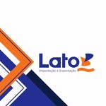

Malote e Cartório em Campinas e São Paulo: Documentos com Prazo Garantido
Documento parado em cartório ou malote atrasado pode travar um processo inteiro. A Brulezzi faz a retirada e entrega em cartório no mesmo dia, além de malotes entre Campinas e São Paulo com coleta e entrega rastreadas.
Para quem é
- Escritórios de advocacia — petições, procurações, contratos
- Escritórios de contabilidade — documentos fiscais e societários
- Empresas com trâmite recorrente de documentos entre Campinas e São Paulo
Como funciona
Coleta no seu escritório, retirada ou protocolo em cartório no mesmo dia, e entrega rastreada com confirmação de recebimento — você sabe exatamente quando o documento chegou. Toda entrega é fechada com foto de quem recebeu, mais nome, documento e setor da pessoa responsável, não só um "entregue" genérico. Para malotes Campinas ↔ São Paulo, a coleta e a entrega acontecem no mesmo dia. Documento avulso e urgente fora desse fluxo? O motoboy 24h resolve na hora.
Se sua empresa tem demanda diária, vale fechar um contrato mensal com rota fixa de cartório — faturamento centralizado, sem nota por corrida avulsa.
"Atendimentos corteses e com muita rapidez, gente honesta que cumpre os prazos."— Marcos, cliente Brulezzi Transportes



Perguntas frequentes
Fazem malote entre Campinas e São Paulo?
Sim, com coleta e entrega no mesmo dia, e entrega rastreada com confirmação de recebimento.
Atendem escritório de advocacia e contabilidade?
Sim, é um dos principais públicos desse serviço.
É possível ter uma rota fixa diária de cartório?
Sim, para demanda recorrente fechamos contrato mensal com rota fixa ou sob demanda.
Precisa de malote ou entrega em cartório hoje?
Solicitar malote no WhatsAppO que confirmar antes da coleta
Uma cotação clara começa com o material e a rota. Você recebe valor e previsão antes de decidir.
- Tipo de material, quantidade, peso e dimensões para confirmar o veículo.
- Endereços, horário necessário e regras de acesso dos locais.
- Condições de pagamento e emissão fiscal na contratação.
- Acompanhamento pelo atendimento até a confirmação de recebimento.